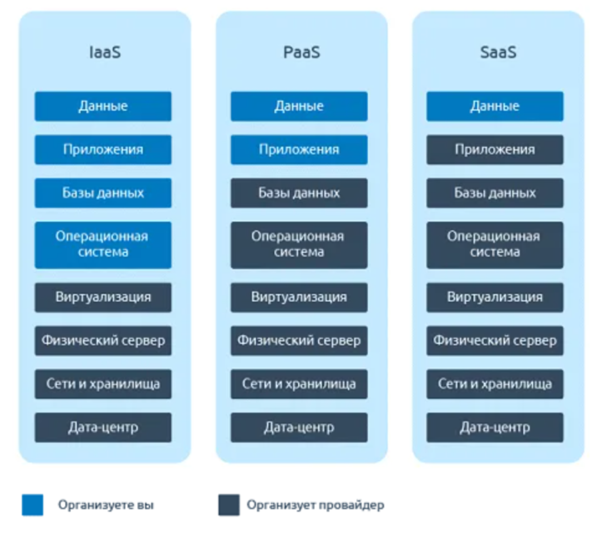

В этой главе я расскажу, как можно сэкономить, покупая меньше железа. Как можно заменить железо софтом (т. е. программами).
Стандартный подход сделать ИТ-инфраструктуру в компании:
- купить кучу нормальных компьютеров;
- купить кучу серверов.
Это т. н. "дивергентная инфраструктура". Она выглядит вот так:
Все элементы системы отделены друг от друга. Все элементы относительно самостоятельны. Классика. Такую инфраструктуру я видел на практике в ЦБДД, в Пермской станции скорой медицинской помощи и в центре гигиены и эпидемиологии в Пермском крае.
Но можно сделать проще:
- взять самые слабые компьютеры, просто остатки какие-нибудь;
- поставить мощный сервер для вычислений;
- поставить сервер с кучей ЖД и SSD для хранения данных.
Это т. н. "конвергентная инфраструктура". Она выглядит вот так:
Есть один сервер для вычислений: там находится 1С без базы данных, почтовый сервер без базы данных, бездисковые виртуальные рабочие места, контроллер домена и веб-сервер без базы данных. В общем, все серверы-программы переехали на один сервер-компьютер.
Есть сервер для данных. Здесь находятся всякие базы данных: для 1С, для веб-сервера, для почтового сервера и SSD для виртуальных рабочих мест.
Все программы на сервере для вычислений нужно настроить так, чтобы они сохраняли и использовали данные с сервера для данных. В наше время все ОС являются сетевыми, поэтому это вполне возможно сделать.
Все компьютеры максимально простые, потому что на них ничего не делается, они нужны только для того, чтобы подключиться к виртуальным рабочим местам.
Кроме дивергентной и конвергентной инфраструктуры, существует и гиперконвергентная инфраструктура. Это то же самое, что и конвергентная, но с той лишь разницей, что нет отдельного сервера для вычислений и для данных, потому что всё находится на одном сервере. Это выглядит вот так:
В плане железа конвергентная инфраструктура проще, чем дивергентная. Но при этом в плане софта сложнее, потому что нужно виртуализацию делать.
Гиперконвергентная инфраструктура же проще конвергентной и в плане железа, и в плане софта. Хотя бы потому, что не нужно уже настраивать программы так, чтобы они хранили данные на отдельном сервере.
Таким образом, гиперконвергентная инфраструктура - это ещё одно упрощение, это упрощение конвергентной инфраструктуры. Нет отдельного сервера для данных.
А лучше ли так или хуже?
Все говорят, что лучше хранить данные отдельно, но никто не говорит почему. Я даже загуглил. Не нашёл информацию, почему так лучше. Но искал не очень долго. Так что я не знаю, что лучше. Не буду ничего утверждать. Хотя скажу, что мне кажется более привлекательным тот вариант, где все файлы хранятся на одном сервере. Потому что так проще. У меня у самого на всех компьютерах все файлы хранятся в одном разделе на всём диске (раздел на диске - это как бы логическое разделение диска. Вот у тебя есть один HDD, а ты хочешь, чтобы у тебя было два HDD. Ты можешь просто сделать два раздела на одном HDD, это будет то же самое, что и два HDD. Можно поставить на разные разделы разные ОС, разные файловые системы и т. д.). У меня дома есть сервер, на котором и данные, и программы сразу работают. Там тоже один раздел на всём диске.
Обычно говорят, что делать всё на одном сервере опасно, потому что он может сломаться, и тогда пропадёт вообще всё. Но для этого можно просто поставить куда-нибудь очень простецкий компьютер с кучей HDD просто для того, чтобы на него копировать все файлы с сервера, делать бэкапы. Когда сервер сломается, просто меняешь что сломалось на новое и загружаешь бэкап. Всё продолжает работать. Всё просто.
Гиперконвергентная инфраструктура - это не самая простая инфраструктура. Можно упростить ещё сильнее: вообще избавиться от сервера. Это т. н. облачная инфраструктура - когда мы используем не свои серверы, а чужие. Это выглядит таким образом:
Расскажу про 4 вида облаков:
1) IaaS - Infrastructure as a Service;
2) PaaS - Platform as a Service;
3) SaaS - Software as a Service;
4) DaaS - Desktop as a Service.
Хотя существует и куча других облаков "as a Service":
- Database as a Service (разновидность PaaS) - аренда базы данных;
- Middleware as a Service (разновидность PaaS) - аренда вспомогательного ПО;
- Contact-Center-as-a-Service - аренда техподдержки?
- Security as a service - аренда безопасности какая-то.
Но я расскажу только про те 4 вида облаков, потому что они самые полезные.
На картинке сравнение первых 3 видов:

IaaS (Infrastructure as a Service) - вы арендуете виртуальные машины, устанавливаете какие захотите на них ОС, потом программы, а потом что-нибудь там ещё делаете, что захотите. Можно арендовать несколько виртуальных машин, а потом в личном кабинете хостера создать между ними виртуальную сеть (по логике должно быть можно, но я не проверял). Пример - любой VPS/VDS-хостинг. Например, от хостинг Selectel (первое, что на ум приходит).
PaaS (Platform as a Service) - проще предыдущего. Здесь уже не нужно делать всё самому, здесь вы арендуете какие-то услуги. Здесь вам не дадут устанавливать свои программы, свои БД, свою ОС. Можно только выбрать из того, что предлагают. Например, вы можете выбрать какую-нибудь БД, веб-сервер, язык программирования для Бэкенда, а потом просто закинуть файлы своего сайта в папку в этом облаке. И у вас будет сайт работать. Получится хостинг.
Но PaaS - это не только хостинг, это что угодно. Бывает целая куча самых разных услуг. Можете на Yandex Cloud посмотреть, там есть что выбрать.
SaaS - (Software as a Service) - здесь ещё проще. Вам вообще ничего выбрать не дадут, будете пользоваться тем, что есть. И здесь уже ничего создавать или программировать не нужно будет, потому что вы арендуете как бы уже программы. Например, сюда входит Яндекс почта, Яндекс диск, Яндекс таблицы, Яндекс документы и так далее. Яндекс 360 сюда входит. Всё то же самое, но от Google сюда входит. Просто всякие сервисы сюда входят, которыми нужно уже именно пользоваться, а не что-то разрабатывать.
DaaS - Desktop as a Service - это вы арендуете рабочие места в облаке. Как VDI или терминальный сервер. Вот волшебство ведь! Мы привыкли, когда всякие сервисы в облаке, но когда весь твой компьютер полностью в облаке и доступен из любой точки мира и с любого компьютера-посредника, это уже намного необычнее! Например, Selectel такое предлагает.
Так вот, как можно облака использовать себе в пользу? Очень легко использовать бесплатные SaaS: Яндекс диск, Яндекс почта, Яндекс документы и всё остальное. И уже становятся не нужны никакие почтовые серверы отдельные, никакие файловые серверы, никакие платные Word, Excel, PowerPoint и так далее. Очень простой способ сэкономить!
Потом, если в компании нужны мощные компьютеры, их можно просто арендовать в виде DaaS.
Если компании нужен сайт, придётся арендовать хостинг (если хочешь как проще. Если хочешь по-сложному, придётся свой веб-сервер делать. Но это уже дивергентная инфраструктура, а мы пока говорим как можно всё упростить). По сути хостинг - это PaaS.
Кстати, если сайт статичный (то есть у него просто нет бэкенда: всё происходит на стороне пользователя), то можно использовать бесплатный хостинг статичных сайтов GitHub Pages. Для большинства государственных компаний (да не только для них) динамичный сайт и не нужен, хватит статичного. Поэтому можно обойтись даже без аренды хостинга!
И всё. С помощью комбинации бесплатных SaaS и бесплатного хостинга GitHub Pages можно закрыть какие-нибудь простые требования бизнеса.
Если в организации нужны мощные компьютеры и сайт с бэкендом, то добавится DaaS и хостинг (PaaS).
Вот так вам помогут облака!
Можно ли упростить всё ещё сильнее? Можно! Нужно просто отправить сотрудников в облака, ой, то есть на удалёнку. И тогда… И тогда схема вашей сети станет выглядеть так:
Картинки нет, потому что у вас больше не будет сети!
Просто используешь разные виды облаков и сотрудников на удалёнке. Тогда вообще никакой физической инфраструктуры уже не будет! Мы настолько всё упростили, что теперь нам и вовсе никакое железо не нужно! И стоит это всё бесплатно, если пользоваться бесплатными облаками!
Хочу ещё кое-что сказать. На самом деле, понятие дивергенции и конвергенции относится не только к инфраструктуре информационной системы. Это в принципе способ делать всё отдельно или всё вместе.
Например, если тебе нужен компьютер, то дивергентный подход - собрать настольный ПК, с системным блоком, как бы коробку такую. Там же будут разные запчасти, в этом заключается дивергенция. Конвергентный подход - купить ноутбук. И что лучше? Ноутбук вообще получится дешевле, если учесть все компоненты. Ноутбук ещё проще. Ноутбук - это быстрее.
Но с обычным компьютером можно будет заменять отдельные запчасти, если захочешь сделать апргейд. Можно будет отдельные запчасти заменять, если какая-то из них сломается.
Но если вы обратите внимание, обычные люди уже настольными ПК не пользуются. У них либо смартфон, либо ноутбук. Ещё раньше существовал северный мост на материнских платах, а теперь он встроен в процессор. Процессоры Apple теперь делаются со встроенной в них оперативной памятью. Раньше не существовало встроенных видеокарт, а теперь проще сделать офисный компьютер именно со встроенной. Так что мне кажется, что мир движется в сторону конвергенции. За конвергенцией будущее.
Конвергентный и дивергентный подход есть и в ОС. Например, в Linux есть такой принцип, что каждая программа должна хорошо делать только что-то одно. Поэтому, говоря о Linux, вместо слова "программа" мы чаще слышим слово "утилита". Утилита - это такая программа, которая может делать только что-то одно. Таким образом удобно сделать систему под себя. Например, в Linux есть межсетевой экран iptables, DHCP-сервер ISC-DHCP, DNS-сервер Bind9, "обновитель ресурсных записей для DDNS" ddclient (не знаю, как правильно назвать эту программу, поэтому будет "обновитель"), веб-сервер Apache и так далее. Все программы делают только что-то одно.
В Windows же используется скорее конвергентный подход. Здесь программы как бы универсальные все.
И что вы думаете? Linux, конечно, более настраиваемый. Как и системный блок, как и дивергентная инфраструктура. Из-за этого он технически лучше, но и сложнее. Поэтому им пользуется 2% всех людей. Из-за конвергентного подхода Windows популярнее.
Кстати, а все ОС от Apple ещё проще, чем Windows. Там вообще ничего настраивать нельзя. Может быть, из-за этого капитализация у Apple больше, чем у Microsoft? И вообще Apple - это самая богатая компания в мире, не считая Saudi Aramco.
Магазины существуют дивергентные и конвергентные. Можно пойти в магазин спортивной одежды, в продуктовый магазин, в овощной, в мясной и так далее. А можно просто купить всё на Wildberries или на Ozon. Обратите внимание, что раньше люди ходили в овощной, в мясной, в пекарню по отдельности. А теперь мы чаще ходим просто в один большой магазин и покупаем всё сразу там. Постепенно мы переходим просто на маркетплейсы. То есть тоже конвергентный подход постепенно становится более популярным.
Как видите, в общем всё идёт к упрощению. Постепенно всё переходит от дивергентного подхода к конвергентному. Всё упрощается и объединяется. Поэтому я за такой подход, за современный. Хотя технически конвергентный подохд чаще оказывается хуже (хотя в случае с северным мостом в процессоре и оперативной памятью в процессоре, мне кажется, стало только лучше, просто ремонтопригодность уменьшилась, зато пропускная способность увеличилась), зато он проще и экономит время. И да, выходит, даже не всегда хуже.
Так вот, к чему вся эта глава? Я хотел показать, что мы вполне можем полностью избавиться из железа в инфраструктуре. Мы можем меньше возиться с железом, если будем пользоваться ноутбуками или смартфонами вместо настольных ПК. Мы можем меньше ходить по магазинам, если будем пользоваться маркетплейсами. Мы можем сэкономить время, если будем пользоваться удобными ОС вместо Linux (а если и пользоваться Linux, то Ubuntu, потому что это самый простой Linux).